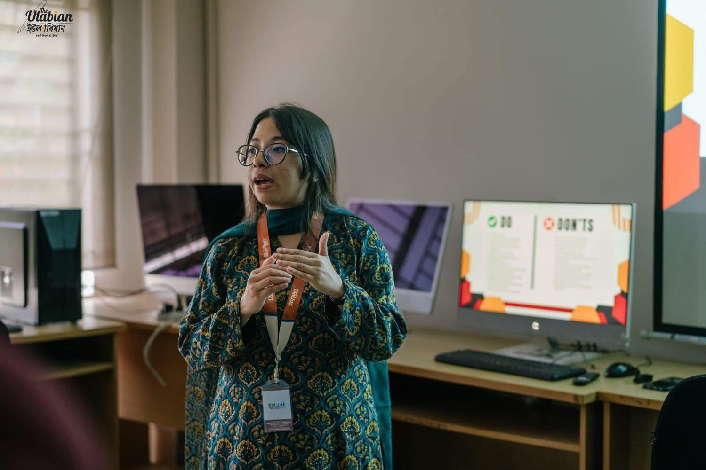
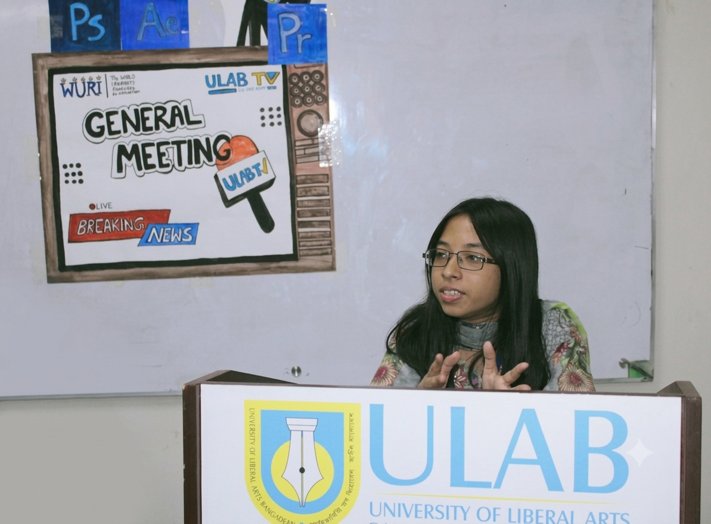
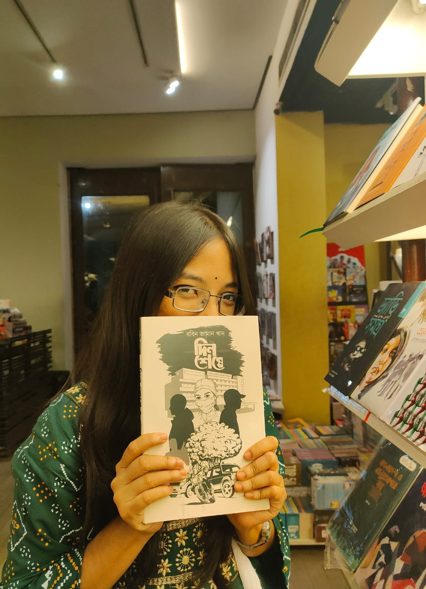
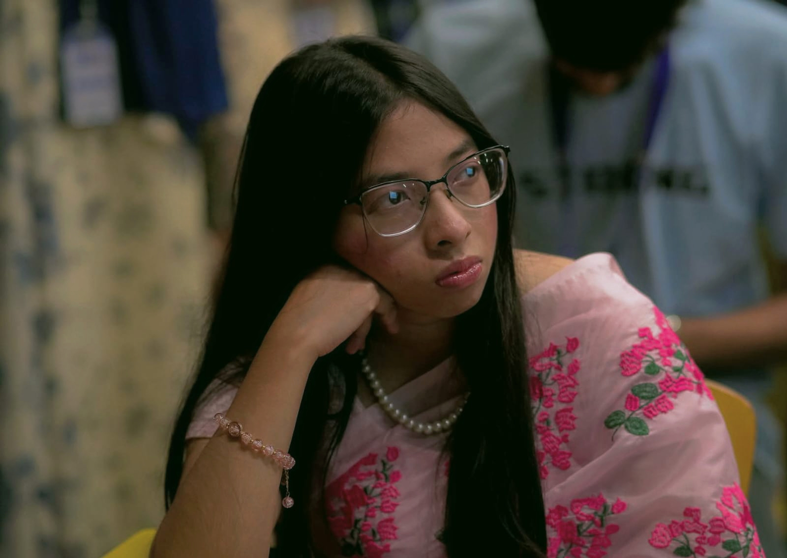
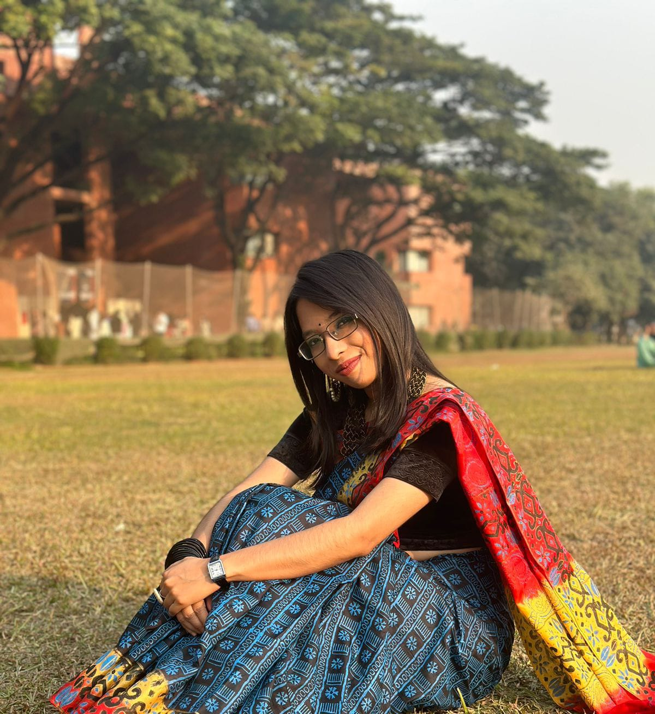
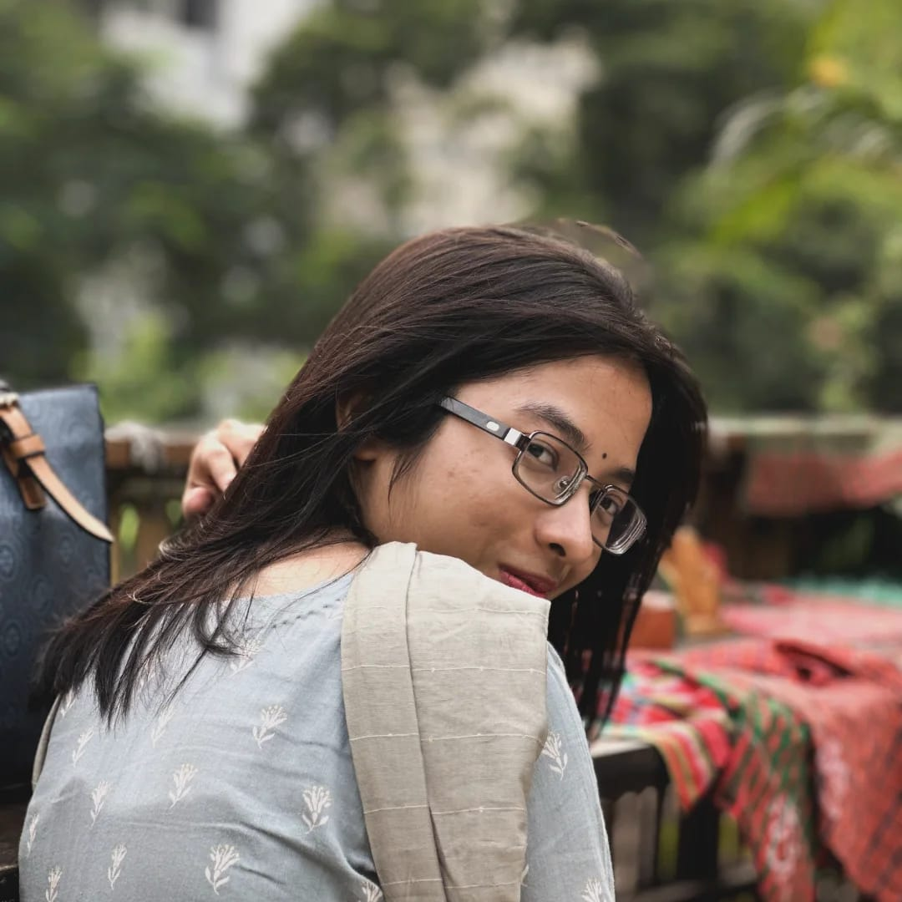

NEWSROOM & DIGITAL MEDIA
ULAB TV
Worked across news and digital roles, including Head of News & Digital, News Plus In-charge, Prime News In-charge and Graphics HR.

A LITTLE MORE ABOUT ME
Curiosity in mind. Stories at heart. A perspective shaped by media, people and learning.

01 / WHO I AM
I’m Faria Ahmed Oishi, a Media Studies and Journalism student at the University of Liberal Arts Bangladesh (ULAB), majoring in Digital Journalism with a minor in Business Administration.
My academic journey has helped me explore the many ways stories are researched, shaped and shared. I’m interested in journalism, creative communication and multimedia work—and in how thoughtful storytelling can inform people, represent different perspectives and bring ideas closer together.
Through campus organisations, newsroom responsibilities, teaching support and creative projects, I continue to build my skills in collaboration, communication and media production. I value curiosity, teamwork and the opportunity to keep learning through real experiences.
Explore My Journey →02 / THE JOURNEY SO FAR
Each role has offered a different view of media—from newsroom coordination and visual communication to academic support and student-led initiatives.
NEWSROOM & DIGITAL MEDIA
Worked across news and digital roles, including Head of News & Digital, News Plus In-charge, Prime News In-charge and Graphics HR.
STUDENT PUBLICATION
Progressed through graphics leadership roles and became CEO, contributing to the publication’s student-led work.
ACADEMIC SUPPORT
Served as a Teaching Assistant, supporting learning within the Media Studies & Journalism department.
PROFESSIONAL EXPOSURE
Completed an internship with the Center for Excellence in Teaching and Learning.
CAMPUS ENGAGEMENT
Contributed as Publication Secretary, gaining experience in student organisation and communication.
SOCIAL MEDIA
Worked as a Social Media Manager, developing practical experience with online communication.
For full role titles and dates, see the complete CV below.
03 / MOMENTS & MEMORIES
A collection of personal moments beyond the classroom and the newsroom.






04 / CURRICULUM VITAE
Explore my education, experience, competencies and extracurricular journey in the complete CV.
LET’S CONNECT
For collaborations, media projects or professional conversations, feel free to get in touch.